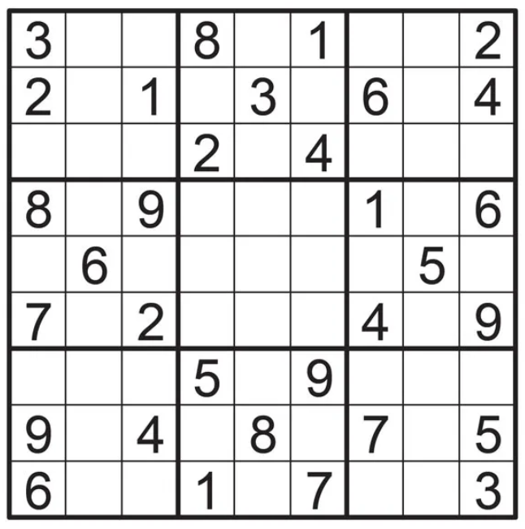
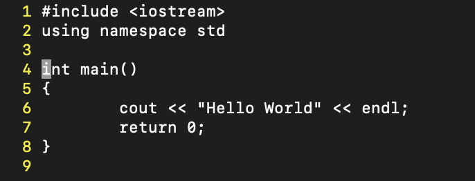
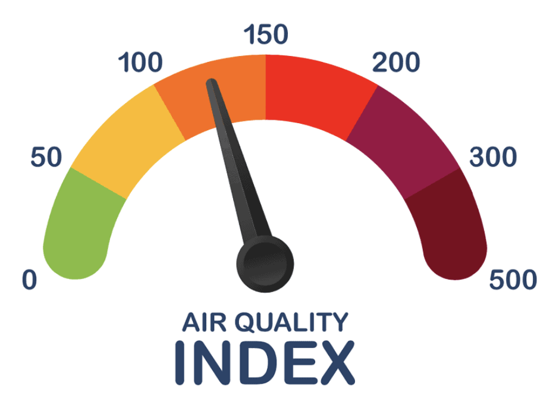

The Sudoku AI project aims to solve a given Sudoku Board within a span of a couple minutes depending on its difficulty using AI heuristics. The program uses constraint propagation, optimal backtracking, and alpha-beta pruning to achieve maximum efficiency.

A sudoku board is a grid that consists of partically completed cells, typically with a size of 9 rows, 9 columns, and 9 boxes with a total of 81 cells. The goal of the game is to solve all the remaining values that put into the grid based on the number range.
This program supports boards of sizes ranging sizes greater than 81 cells, with rows and columns upto 20 and higher depending on the time constraints.
Programming Language: Python
The Text Editor aims to create a text editor like vim that has the ability to monitor the cursor and performs operations such as undo/redo, and other text operations on a Linux shell window.

A cursor is displayed somewhere in that text area — depicted as a black square. Line numbers are displayed along the left-hand edge of the window. If the text becomes longer than the available space in the editor area, the text scrolls vertically and horizontally as necessary, making the cursor always visible in the editor area. Error messages are displayed (such as when we trying to move the cursor above the topmost line of the text) and in those cases, the error messages are shown just below the dashes under the last line of text.
This program supports various key operations, including any printable character, CTRL+c, CTRL+v, CTRL+x, CTRL+z, CTRL+y, CTRL+a, CTRL+d, CTRL+k, CTRL+u, CTRL+r, CTRL+l, CTRL+w, among others.
Programming Language: C++
The Geo-coding Air Quality Index project aims to create a program that can take of a city and return the Air Quality Index (AQI) of the nearby area. The program uses the Air Quaility data from Nominatim API and Purple Air to find AQI of the given location.

The program can also find the exact location of a place from its name and return its longitude and latitude. The program can perform both forward and reverse geo-coding. The program asks the users for the number of locations they wish to find the AQI for along with the range of distances for the nearby cities with a max threshold.
Programming Language: Python
Check out my Github! ⇩